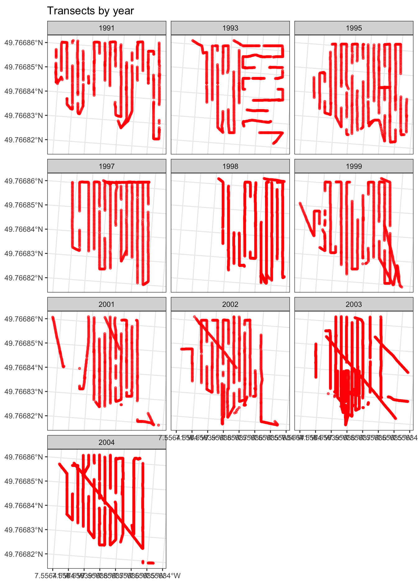
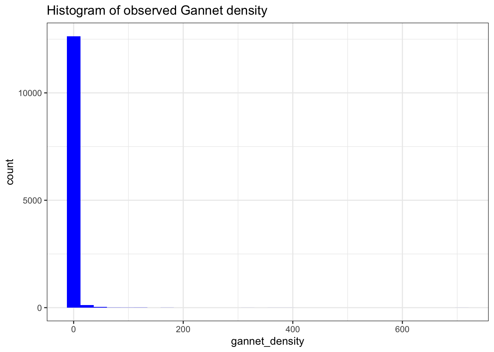
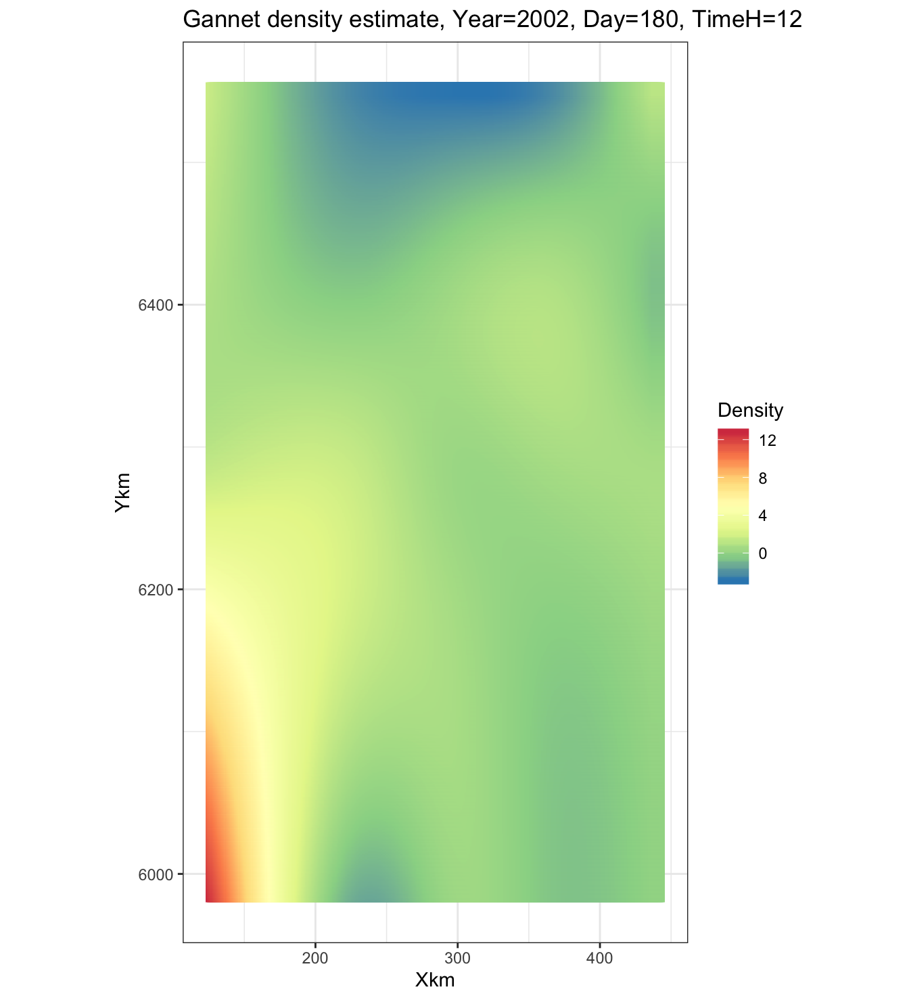

Generalised Additive Models
1 Introduction
The GLM relates the mean of the response variable to a linear combination of covariates. The response variable is assumed to be conditionally distributed according to a distribution within the exponential family (bionomial, poisson, gamma etc). The Generalised Additive Model (GAM) a popular ecology modelling approach, that relaxes the need for the response variable to be characterised by a particular distribution, and instead allows the the relationship between response variable and covariats to be described by the linear combination of smooth curves. GAMs are of the form:
\[\mathop{\mathbb{E}}(Y) = g^{-1} \left( \beta_0 + \sum^J_{j=1}f_j(x_j) \right) \] , where \(\mathop{\mathbb{E}}\) is the expected value of the response variable, \(Y\), \(g\) is the link function and distribution. \(f_j\) is the smooth function of covariate \(x_j\) and \(\beta_0\) is the intercept. The smooth functions are the workhorse of the GAM, and are typically spline functions, but there are many other forms, dependeing on the application.
1.1 The Northern Gannet Morus bassanus
This vignette makes use of data collected by Camphuysen (2011) 1, who undertook a survey of the feeding range of gannets nesting on Bass Rock, a colony found in the Firth of Forth, from onboard fishery research vessels in June and July from 1991 to 2004. Gannet counts were undertaken when the survey ship was fishing. A total of 9,972 km\(^2\) were surveyed, travelling a distance of 33,601 km, and 44,818 Gannets were observed during these surveys. A correction factor for detectability was not applied, with the assumption that all individual Gannets, either swimming or in flight, were detected within a 300m wide strip transect (counts were discontinued in rough conditions, e.g. above wind force 6 on the Beaufort scale).
The underlying question is to determine when and where gannet feed in the vicinity of the Bass Rock colony. We will use a GAM in an attempt to answer this question, and the approach adopted makes extensive reference to Zuur (2012) 2.
# Clear all
rm(list = ls())
# Load relevant libraries
library(tidyverse)
library(skimr)
library(mgcv)
library(sf)
library(lubridate)
# colourblind-friendly colourschemes
library(viridis)2 The data
Let’s load the survey data and take a quick peak at its format and structure:
# Read tab delimited file
gannets <- read.table("data_analysis_files/Gannets2.txt", sep = "\t", header = TRUE)
skim(gannets)| Name | gannets |
| Number of rows | 12842 |
| Number of columns | 14 |
| _______________________ | |
| Column type frequency: | |
| numeric | 14 |
| ________________________ | |
| Group variables | None |
Variable type: numeric
| skim_variable | n_missing | complete_rate | mean | sd | p0 | p25 | p50 | p75 | p100 | hist |
|---|---|---|---|---|---|---|---|---|---|---|
| ID | 0 | 1 | 6421.50 | 3707.31 | 1.00 | 3211.25 | 6421.50 | 9631.75 | 12842.00 | ▇▇▇▇▇ |
| Poskey | 0 | 1 | 156209631.43 | 39586900.46 | 20015185.00 | 170001781.25 | 170007814.50 | 170011429.75 | 170015724.00 | ▁▁▁▁▇ |
| Day | 0 | 1 | 12.06 | 7.18 | 1.00 | 7.00 | 11.00 | 16.00 | 30.00 | ▆▇▇▂▂ |
| Month | 0 | 1 | 6.77 | 0.42 | 6.00 | 7.00 | 7.00 | 7.00 | 7.00 | ▂▁▁▁▇ |
| Year | 0 | 1 | 1999.63 | 4.09 | 1991.00 | 1997.00 | 2001.00 | 2003.00 | 2004.00 | ▂▁▃▂▇ |
| Hours | 0 | 1 | 11.03 | 4.45 | 2.00 | 7.00 | 11.00 | 15.00 | 20.00 | ▅▇▆▇▅ |
| Minutes | 0 | 1 | 27.67 | 17.31 | 0.00 | 12.00 | 28.00 | 42.00 | 59.00 | ▇▆▇▆▆ |
| Latitude | 0 | 1 | 56.77 | 1.08 | 54.01 | 56.03 | 56.66 | 57.67 | 59.00 | ▁▅▇▅▃ |
| Longitude | 0 | 1 | -0.30 | 1.28 | -3.00 | -1.39 | -0.39 | 0.79 | 2.00 | ▂▇▆▆▆ |
| Area_surveyedkm2 | 0 | 1 | 0.78 | 0.34 | 0.00 | 0.48 | 0.66 | 1.11 | 2.79 | ▇▇▅▁▁ |
| Seastate | 0 | 1 | 2.93 | 1.52 | 0.00 | 2.00 | 3.00 | 4.00 | 6.00 | ▆▆▇▇▅ |
| Gannets_in_transect | 0 | 1 | 0.67 | 5.06 | 0.00 | 0.00 | 0.00 | 0.00 | 333.00 | ▇▁▁▁▁ |
| X | 0 | 1 | 298511.27 | 77591.61 | 127832.60 | 231037.28 | 292333.01 | 365528.92 | 440991.01 | ▂▇▆▆▆ |
| Y | 0 | 1 | 6297607.44 | 120950.25 | 5985125.19 | 6218768.16 | 6282868.94 | 6396381.12 | 6552041.75 | ▁▅▇▅▃ |
We can see that there are no missing data, and that Gannets_in_transect looks like the response variable. Each records represents the number of gannets observed in a transect, and with Area_survyedkm2 we know the number of gannet per km2. If each strip transect is 300m wide, we can establish the transect length if needed.
3 Data analysis
Before we proceed with modelling, let’s do some basic data analysis to make sure everything is in order.
3.1 Visualisng transects
In order to see if the area sampled by year is the same, we can plot the transects by year:
gannets %>%
# Create an sf geometry for each record
st_as_sf(coords = c("Latitude","Longitude"), remove = F) %>%
# Transform the cooridante reference to 27700 (UK)
st_set_crs(27700) %>%
ggplot() +
geom_sf(stat="sf", colour= "red", alpha = 0.6, size = 1) +
facet_wrap(~Year, ncol = 3) +
theme_bw()
Looks as if surveys effort is fairly consistent, year on year, but on inspecting the data it looks like the size of individual transects is different.
gannets %>%
ggplot(aes(x = Area_surveyedkm2)) +
# Plot histogram of Area_surveyedkm2
geom_histogram(fill="blue", stat = "count") +
theme_bw()We can see that the transect effort, represented by Area-surveyedkm2 is highly variable. This means that we have a variable sampling effort between transects. To account for this variable effect we can use Area-surveyedkm2 as an offset variable. Efecctively this means that if the sampling effort doubles, the number of gannets also doubles.
Also we have some transects where Area-surveyedkm2 is equal to zero. We will remove these, as the boat was not moving and so a transect was not traveresed.
# Add extra data items in preparation for modelling
gannets <- gannets %>%
# Remove all transects that were equal to zero size
filter(Area_surveyedkm2 > 0) %>%
# Create additional data for downstream analysis
mutate(
# Create offset variable to compensate for sampling effort
LArea = log(Area_surveyedkm2),
# Create continuous time measured in hours
TimeH = Hours + Minutes/60,
# Generate a date for each observation
Date = dmy(sprintf('%02d%02d%04d', Day, Month, Year)),
# Generate day in year
DayInYear = yday(Date),
# Change X and Y into km
Xkm = X/1000,
Ykm = Y/1000
)4 Gannet density in space and time
We can now undertake some further data exploration and look at how surveyed gannet density varies in space and time. The first plot below shows how observed gannet density varies by year:
# First calculate gannet density per transect
gannets <- gannets %>%
mutate(gannet_density = Gannets_in_transect/Area_surveyedkm2)
# Plot gannet density in space by year
gannets %>%
ggplot() +
geom_point(
# Convert m to km for transect locations
# Make each dot size equal to gannet abundance
aes(x = Xkm, y = Ykm, size = gannet_density),
colour = "red",
alpha = 0.6
) +
# Project coordinates
coord_sf(crs = 27700) +
facet_wrap(~Year, ncol = 3) +
# Add a scale for the size of each dot
scale_size(range = c(0, 10)) +
labs( x = "Latitude", y = "Longitude") +
theme_bw()This clearly shows us that gannet density changes in space year on year, indicating that a three dimenstional GAM smooth of the form \(f(Year_i, lat_i, long_i)\) is required to capture this effect.
What can we tell about the distribution of gannet density?
gannets %>%
ggplot(aes(x = gannet_density)) +
# Plot histogram of Area_surveyedkm2
geom_histogram(fill="blue", bins = 30) +
theme_bw()
We can see that the data is clearly zero-inflated. The vast majority of observations are zero. But the data are highly dispersed too, as there are density observations of 600.
We can also observe gannet density by hour of day, for each year:
# Plot gannet density by day and hour
gannets %>%
ggplot() +
geom_point(
# Convert m to km for transect locations
# Make each dot size equal to gannet abundance
aes(x = TimeH, y = DayInYear, size = gannet_density),
colour = "blue",
alpha = 0.5
) +
facet_wrap(~Year, ncol = 3) +
labs( x = "Hour of day", y = "Day in Year") +
theme_bw()We can see that in 2003 surveying started earleir in the year. It seems that there is a time of day effect that changes as the breeding season progresses.
5 A GAM for Gannet abundance
We would like to build a model to predict gannet abundance in time and space. Our initial data exploration has shown that gannet abundance varies in a non-linear fashion across days, months and years. Below we will iteratively build up a model and each step attempt to evaluate the overall model fit.
5.1 A year effect and offset variable
# Create first gam for gannet abundance
m1 <- gam(
# Set the model equation: abundnce is driven by a smooth of year plus
# an offset equal to the log of the sample area
Gannets_in_transect ~ s(Year) + offset(LArea),
# We assume that gannet abundance (a count) is from a poisson distribution
family = poisson,
data = gannets)
# Show summary of model fit
summary(m1)##
## Family: poisson
## Link function: log
##
## Formula:
## Gannets_in_transect ~ s(Year) + offset(LArea)
##
## Parametric coefficients:
## Estimate Std. Error z value Pr(>|z|)
## (Intercept) -0.16845 0.01212 -13.9 <2e-16 ***
## ---
## Signif. codes: 0 '***' 0.001 '**' 0.01 '*' 0.05 '.' 0.1 ' ' 1
##
## Approximate significance of smooth terms:
## edf Ref.df Chi.sq p-value
## s(Year) 8.886 8.995 3093 <2e-16 ***
## ---
## Signif. codes: 0 '***' 0.001 '**' 0.01 '*' 0.05 '.' 0.1 ' ' 1
##
## R-sq.(adj) = 0.000322 Deviance explained = 6.73%
## UBRE = 2.4997 Scale est. = 1 n = 12820The results show that the smooth of year is significant in the model, and that the smooth uses 8.9 effective degrees of freedom. We can plot the effect of the smooth by year as follows:
plot(m1)We can see that the effect of the Year variable increases to 1997, drops significantly in 1998 and then increases again in 2003. Given the fact that To calulcate the degree of overdispersion we look at the residual errors as follows:
# Overdispersion is calculated as the sum of squared Pearson residuals divided by
# sample size minus the number of parameters
overdispersion <- function(m){
err <- resid(m, type = "pearson")
overdispersion <- sum(err^2)/m$df.residual
return(overdispersion)
}
overdispersion(m1)## [1] 36.92865There is considerable overdisperson in this first model. The summary for m1 shows that the \(R^2\) is very low too.
We can now add the effect of the geographical location of the surveying via a two-dimensional smooth. As the locational covariates are at a very different scale and units to the other covariates (all time based) we use the te or tensor product smoother. From our data exploration work, we noted that a three dimensional function of the form \(f(Year_i, lat_i, long_i)\) might be significant. We also include the sea state as categorical variable, and the second combinatory effect of time of day coupled with day of the year.
# Create first gam for gannet abundance
m2 <- gam(
# Set abundance as ther respone variable:
Gannets_in_transect ~
# 1 - TE smooth of time of day combined with day of year
te(TimeH, DayInYear) +
# 2 - seastate as a categorical variable
as.factor(Seastate) +
# 3 - An offset equal to the log of the sample area
offset(LArea) +
# 4 - TE smooth of lat, long and year
te(Xkm, Ykm, Year),
# We assume that gannet abundance (a count) is from a poisson distribution
family = poisson,
data = gannets)
# Show summary of model fit
summary(m2)##
## Family: poisson
## Link function: log
##
## Formula:
## Gannets_in_transect ~ te(TimeH, DayInYear) + as.factor(Seastate) +
## offset(LArea) + te(Xkm, Ykm, Year)
##
## Parametric coefficients:
## Estimate Std. Error z value Pr(>|z|)
## (Intercept) -0.62841 0.04602 -13.654 < 2e-16 ***
## as.factor(Seastate)1 0.08529 0.04527 1.884 0.059576 .
## as.factor(Seastate)2 -0.16130 0.04573 -3.528 0.000419 ***
## as.factor(Seastate)3 -0.26007 0.04679 -5.558 2.73e-08 ***
## as.factor(Seastate)4 -0.37802 0.05179 -7.299 2.90e-13 ***
## as.factor(Seastate)5 -0.17460 0.06644 -2.628 0.008590 **
## as.factor(Seastate)6 -0.43253 0.10326 -4.189 2.81e-05 ***
## ---
## Signif. codes: 0 '***' 0.001 '**' 0.01 '*' 0.05 '.' 0.1 ' ' 1
##
## Approximate significance of smooth terms:
## edf Ref.df Chi.sq p-value
## te(TimeH,DayInYear) 23.9 24.0 1830 <2e-16 ***
## te(Xkm,Ykm,Year) 123.1 123.9 8567 <2e-16 ***
## ---
## Signif. codes: 0 '***' 0.001 '**' 0.01 '*' 0.05 '.' 0.1 ' ' 1
##
## R-sq.(adj) = 0.0668 Deviance explained = 30.6%
## UBRE = 1.6279 Scale est. = 1 n = 12820# Calculate overdispersion
overdispersion(m2)## [1] 12.07295This makes a significant difference to the overdispersion which has now been reduced to 12. This is still significant, and the lastest term introduced requires 124 degrees of freedom so is computationally expensive. Also the \(R^2\) has improved slightly (though not significantly).
One final thing is to try a negative-binomial GAM. In such a model, the variance is quadratic and as such might better capture the overdispersion we are seeing.
# Create first gam for gannet abundance
m3 <- gam(
# Set abundance as ther respone variable:
Gannets_in_transect ~
# 1 - TE smooth of time of day combined with day of year
te(TimeH, DayInYear) +
# 2 - seastate as a categorical variable
as.factor(Seastate) +
# 3 - An offset equal to the log of the sample area
offset(LArea) +
# 4 - TE smooth of lat, long and year
te(Xkm, Ykm, Year),
# We assume that gannet abundance (a count) is from a negative-binomial distribution
# Set theta equal to 0.1
family = negbin(0.1),
link = log,
data = gannets)
# Show summary of model fit
summary(m3)##
## Family: Negative Binomial(0.1)
## Link function: log
##
## Formula:
## Gannets_in_transect ~ te(TimeH, DayInYear) + as.factor(Seastate) +
## offset(LArea) + te(Xkm, Ykm, Year)
##
## Parametric coefficients:
## Estimate Std. Error z value Pr(>|z|)
## (Intercept) -0.52398 0.12844 -4.080 4.51e-05 ***
## as.factor(Seastate)1 0.21261 0.15648 1.359 0.1742
## as.factor(Seastate)2 -0.23423 0.14832 -1.579 0.1143
## as.factor(Seastate)3 -0.16531 0.14498 -1.140 0.2542
## as.factor(Seastate)4 -0.26461 0.15211 -1.740 0.0819 .
## as.factor(Seastate)5 -0.04352 0.18410 -0.236 0.8131
## as.factor(Seastate)6 -0.36137 0.23092 -1.565 0.1176
## ---
## Signif. codes: 0 '***' 0.001 '**' 0.01 '*' 0.05 '.' 0.1 ' ' 1
##
## Approximate significance of smooth terms:
## edf Ref.df Chi.sq p-value
## te(TimeH,DayInYear) 22.24 23.48 69.51 6.27e-06 ***
## te(Xkm,Ykm,Year) 90.42 101.74 708.13 < 2e-16 ***
## ---
## Signif. codes: 0 '***' 0.001 '**' 0.01 '*' 0.05 '.' 0.1 ' ' 1
##
## R-sq.(adj) = 0.0301 Deviance explained = 27.2%
## UBRE = -0.63999 Scale est. = 1 n = 12820# Calculate overdispersion
overdispersion(m3)## [1] 1.430392This appeared to work well. Our overdispersion measure started at 37 with model 1, and now is at 1.4 with model 3. We can run an anova test to see which smooths are significant within the final model.
anova(m3)##
## Family: Negative Binomial(0.1)
## Link function: log
##
## Formula:
## Gannets_in_transect ~ te(TimeH, DayInYear) + as.factor(Seastate) +
## offset(LArea) + te(Xkm, Ykm, Year)
##
## Parametric Terms:
## df Chi.sq p-value
## as.factor(Seastate) 6 19.1 0.00399
##
## Approximate significance of smooth terms:
## edf Ref.df Chi.sq p-value
## te(TimeH,DayInYear) 22.24 23.48 69.51 6.27e-06
## te(Xkm,Ykm,Year) 90.42 101.74 708.13 < 2e-16We can visiualise the two smooths in the model that are deemed significant by the anova test:
# Plot X,Y smooth
vis.gam(m3,
# Covariates we want to visualise
view = c("Xkm","Ykm"),
# Number of points in either direction for calculating the surface
n.grid = 50,
# Define plot orientation
theta = 35, phi = 32,
# Define labels
zlab = "smooth", xlab = "Xkm", ylab = "Ykm",
# Pick colour scheme
color = "topo",
# Give plot a title
main = " te(Xkm, Ykm)")
# Plot TimeH,DayInYear smooth
vis.gam(m3,
# Covariates we want to visualise
view = c("TimeH","DayInYear"),
# Number of points in either direction for calculating the surface
n.grid = 50,
# Define plot orientation
theta = 35, phi = 32,
# Define labels
zlab = "smooth", xlab = "TimeH", ylab = "DayInYear",
# Pick colour scheme
color = "topo",
# Give plot a title
main = "te(TimeH, DayInYear)")It seems that for the te(X,Y) smooth the response is concentrated towards the south-west of the area. The te(TimeH, DayInYear) smooth is perhaps more difficult to interpret. It appears that the effect on the response variable is more significant at the start of the year, than at the end.
6 Make a prediction and plot it in space and time
To map fitted values, we first create a data.frame of covariates required by the model. Then we use the predict function to generate a set of values. In the example below we will fit a model to give abundance of gannets within 1km squares. First we need to create the data to use when predicting the overall response.
# Create dataframe containing all data
m3_data <- expand.grid(
# Create X values for model - one every 1km
Xkm = X_values <- seq(min(gannets$Xkm), max(gannets$Xkm), by = 1),
# Create Y values for model - one every 1km
Ykm = Y_values <- seq(min(gannets$Ykm), max(gannets$Ykm), by = 1),
# Pick a year to model
Year = 2002,
# Pick a seastate
Seastate = as.factor(1),
# Set offset area equal to cell size (1km)
LArea = 1,
# Pick the middle of the year
DayInYear = 180,
# Pick middle of the day
TimeH = 12
)
# Now make a prediction using m3
abundance_pred <- predict(m3, m3_data)
# Add it to the prediction grid
m3_data$Nhat <- abundance_pred
# Now plot
m3_data %>%
ggplot() +
geom_tile(aes(x=Xkm, y=Ykm, fill = Nhat, width = 10, height = 10)) +
coord_equal() +
labs(fill="Density") +
scale_fill_distiller(palette = "Spectral") +
theme_bw()
We can see that there is a slight increase in observed gannet density in the south west corner of the map. If we sum every cell in the grid we should get the total gannet abundance at the time specified above (middle of 2002):
sum(m3_data$Nhat)## [1] 123167As of 2015, the colony size is thought to be around 150,000 birds on Bass Rock3. So the final abundance estimate for 2002, seems consitent with this. Note we did not accoutn for detectability in the above. It was assumed that everything present was observed within the 300m wide transect.
7 References
Northern Gannets in the North Sea, KCJ Camphuysen (2011). https://britishbirds.co.uk/wp-content/uploads/2014/05/V104_N02_P060%E2%80%93076_A.pdf↩
Beginner’s Guide to Generalized Additive Models with R, Zuur, AF (2012). https://highstat.com/index.php/beginner-s-guide-to-generalized-additive-models-with-r↩
BBC News (2015), https://www.bbc.co.uk/news/uk-scotland-edinburgh-east-fife-31453488↩